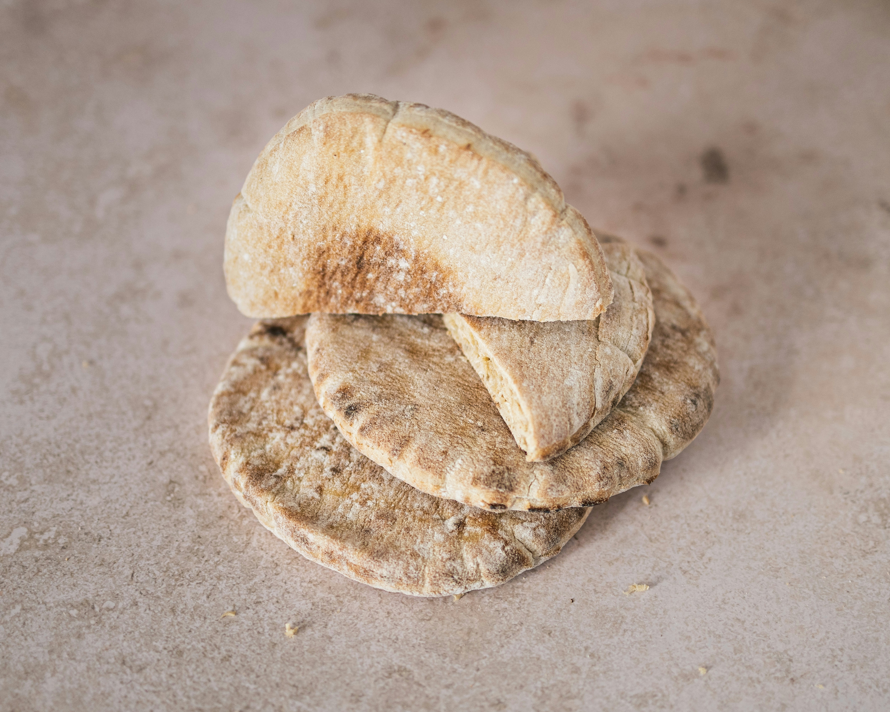

Pita Bread

Description
Pita bread is a flatbread typical of Middle Eastern cuisine, characterized by its hollow interior, unlike naan bread.
This makes it ideal for filling with falafel, roasted vegetables, braised meat, and more. You're probably very familiar with it,
but you might not know how incredibly easy it is to prepare, and that's why you've never considered making it yourself, like homemade bread.
Well, let me tell you, it's a piece of cake, and once you try homemade pita bread, you'll never buy it at the supermarket again.
The store-bought kind will just taste dry and bland, because the flavor and texture of homemade pita bread are unmatched, like a good baguette.
Ingredients
- 280g of wheat flour
- 70g of wholemeal flour
- 230g of water
- 10g of sugar
- 5g of salt
- 5g of fresh baker's yeast
Steps
- In a deep, wide bowl, combine the water (preferably lukewarm), the crumbled fresh yeast, the whole wheat flour, the sugar,
and the salt. Mix well before adding the all-purpose flour.
- Stir the mixture in the bowl until you can't stir anymore (it will become difficult as the ingredients combine),
then transfer it to the counter and knead for 10 minutes. You can also use a food processor or stand mixer if you prefer.
- The result will be an elastic, smooth, and slightly sticky dough, but very easy to handle. If this isn't the case,
you can add a little more flour and continue kneading until you achieve the desired texture.
Cover the dough with a cloth and let it rest for an hour.
- After the resting time, the dough will have risen slightly. Divide it into six equal portions and shape each into a ball.
Sprinkle a little flour on the work surface and roll out each portion into a disc. Place them on baking paper.
- Cover the discs with the cloth and let them rest for 30 minutes. Meanwhile, preheate the oven to its highest setting,
using both top and bottom heat, and placed one of the baking trays inside.
It's very important that the oven is very hot; ours was at 280°C (550°F).
- We bake the loaves two at a time, with their respective baking papers,
on the hot tray for five minutes (2-3 minutes more if your oven reaches a lower temperature).
Odin Recipes